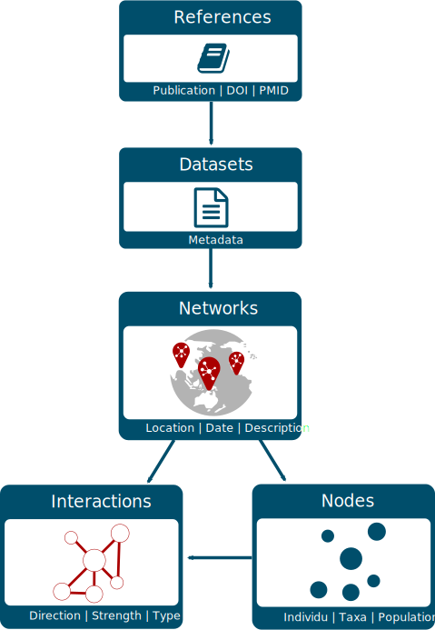

rmangal.RmdThe Mangal project aims at archiving published ecological networks and at easing their retrieval. To do so, Mangal:
uses a data specification for ecological networks (described in Poisot et al. 2016);
archives ecological networks in a PostgreSQL database;
provides:
Currently, 172 datasets are including in the database representing over 1300 ecological networks. In 2016, the first paper describing the project was published and introduced the first release of rmangal (Poisot et al. 2016). Since then, the structure of the database has been improved (new fields have been added), several ecological networks added and the API entirely rewritten. Consequently, the first release of the rmangal is obsolete (and archived) and we introduce rmangal v2.0 in this vignette.

The diagram on the left side represents the structure of the Mangal database. All references included in Mangal correspond to a specific publication that includes one or several dataset(s). This dataset is basically a collection of ecological networks whose nodes and interactions (edges) are stored in separate tables. Below, we briefly describe the content of each table.
References – Information pertaining to a reference (scientific article, book, online website, etc.) characterizing an original collection of ecological networks. URLs of data and publication sources are included as well as persistent identifiers (when available) such as digital object identifiers (DOIs). This allows the user to retrieve more details about original publications using appropriate R packages such as crossref.
Datasets – Metadata of the datasets attached to a reference. It includes a general description of the networks.
Networks – Metadata of the networks attached to a dataset. It provides the sampling location, date and specific description of the network.
Nodes – Information on the population, taxa or individu in the network. Each node has the original taxon name documented and taxonomic backbone provided by all services embbeded in taxize (Chamberlain et al. 2019).
Interactions – Information on the interaction type (e.g. mutualism, predation, etc.), the strength, and the direction of the interaction between two nodes.
So far, the rmangal package provides methods to get access to the data store. Data requests (performed via httr::GET()) do not require any authentification.
A bearer authentification strategy using ORCID credentials (as a third-party services) has been implemented on all POST, DELETE, PUT API operations to allow the user to add and delete new ecological to the data base. These features are not currently included in the rmangal package, but are under consideration for future major releases.
In order to efficiently retrieve networks from the database, rmangal includes 6 search functions querying the 5 tables described above as well as a table dedicated to the taxonomy backbone.
search_references(): search in the reference table, for instance the user can look for a specific doi;search_datasets(): search among datasets using a keyword;search_networks(): search networks based on a keyword or a geographical area;search_interactions(): list all networks containing a specific interaction type;search_nodes(): identify nodes based on nodes information;search_taxonomy(): identify nodes based on taxonomic names and unique identifiers.All of these functions return specific class objects with the information needed to retrieve the corresponding set of ecological networks with get_collection(). Hence, the user can easily retrieve data in two steps:
networks <- search_*() %>% get_collection()Note that if there is only one network to be retrieved, get_collection() returns a mgNetwork object, otherwise it returns an object of class mgNetworksCollection which is a collection (a list) of mgNetwork objects. Below, we exemplify how to use the search functions, how to get a collection of networks and how to use other packages to carry out specific analyses.
In rmangal, every functions queries a specific table and allow only one query at a time (see section Batch analysis to learn how to perform more than one query). All the functions offer two ways to query the corresponding table:
Let’s load rmangal as well as two helper packages:
library(rmangal)
library(magrittr) # for the pip %>%
library(tibble) # to use tibbles, enhanced data framesLet’s assume we are looking for ecological networks including species living in lagoons. If we have no idea about any existing data set, the best starting point is then to query the dataset table with lagoon as a keyword:
lagoon <- search_datasets(query = "lagoon")
class(lagoon)
#> [1] "tbl_df" "tbl" "data.frame"
#> [4] "mgSearchDatasets"
lagoon
#> # A tibble: 2 x 11
#> id name date description public created_at updated_at ref_id user_id
#> <int> <chr> <chr> <chr> <lgl> <chr> <chr> <int> <int>
#> 1 22 zeti… 2003… Dietary ma… TRUE 2019-02-2… 2019-02-2… 22 3
#> 2 52 yane… 1973… Food web o… TRUE 2019-02-2… 2019-02-2… 53 3
#> # … with 2 more variables: references <list>, networks <list>If the Mangal reference id containing the laggoon networks was known, we could build a custom query as follow:
lagoon_zetina <- search_datasets(list(ref_id = 22))
lagoon_zetina
#> # A tibble: 1 x 11
#> id name date description public created_at updated_at ref_id user_id
#> <int> <chr> <chr> <chr> <lgl> <chr> <chr> <int> <int>
#> 1 22 zeti… 2003… Dietary ma… TRUE 2019-02-2… 2019-02-2… 22 3
#> # … with 2 more variables: references <list>, networks <list>Note that if an empty character is passed, i.e. "", all entries are returned. We can use this behaviour to list all datasets available:
all_datasets <- search_datasets("")
glimpse(all_datasets)
#> Observations: 172
#> Variables: 11
#> $ id <int> 2, 7, 9, 14, 15, 16, 17, 18, 19, 20, 21, 22, 23, 24,…
#> $ name <chr> "howking_1968", "lundgren_olesen_2005", "elberling_o…
#> $ date <chr> "1963-06-01T00:00:00.000Z", "2002-08-04T00:00:00.000…
#> $ description <chr> "Insect activity recorded on flower at Lake Hazen, E…
#> $ public <lgl> TRUE, TRUE, TRUE, TRUE, TRUE, TRUE, TRUE, TRUE, TRUE…
#> $ created_at <chr> "2019-02-22T15:39:00.427Z", "2019-02-22T20:04:25.322…
#> $ updated_at <chr> "2019-02-22T15:39:00.427Z", "2019-02-22T20:04:25.322…
#> $ ref_id <int> 2, 7, 9, 14, 15, 16, 17, 18, 19, 20, 21, 22, 23, 24,…
#> $ user_id <int> 2, 2, 2, 3, 3, 3, 3, 3, 3, 3, 3, 3, 3, 3, 3, 3, 3, 3…
#> $ references <list> [<data.frame[1 x 11]>, <data.frame[1 x 11]>, <data.…
#> $ networks <list> [<sf[1 x 11]>, <sf[1 x 11]>, <sf[1 x 11]>, <sf[1 x …As shown in the diagram above, a dataset comes from a specific reference and search_references() queries the reference table directly. A handy argument of this function is doi as it allows to pass a Digital Object Identifier and so to retrieve all datasets attached to a specific publication.
zetina_2003 <- search_references(doi = "10.1016/s0272-7714(02)00410-9")We can also search by keyword across all networks.
insect_coll <- search_networks(query="insect%")
glimpse(insect_coll)
#> Observations: 14
#> Variables: 11
#> $ id <int> 18, 909, 948, 1460, 1461, 1471, 1493, 1501, 150…
#> $ name <chr> "mosquin_martin_1967_19650731_18", "elberling_o…
#> $ date <chr> "1965-07-31T00:00:00.000Z", "1994-08-23T00:00:0…
#> $ description <chr> "Occurence of flower-visiting insect on plant s…
#> $ public <lgl> TRUE, TRUE, TRUE, TRUE, TRUE, TRUE, TRUE, TRUE,…
#> $ all_interactions <lgl> FALSE, FALSE, FALSE, FALSE, FALSE, FALSE, FALSE…
#> $ created_at <chr> "2019-02-22T18:38:37.491Z", "2019-02-24T22:21:3…
#> $ updated_at <chr> "2019-02-22T18:38:37.491Z", "2019-02-24T22:21:3…
#> $ dataset_id <int> 4, 9, 66, 91, 91, 99, 114, 118, 118, 119, 124, …
#> $ user_id <int> 3, 2, 2, 4, 4, 4, 4, 4, 4, 4, 4, 4, 4, 4
#> $ geom <POINT [°]> POINT (-114.9667 75), POINT (18.5 68.35),…search_networks() allows spatial queries. The user can provide a sf object to access all networks included in the spatial extent of this object. For instance, we can request all networks in California:
library(mapview)
library(USAboundaries)
area <- us_states(state = "california")
in_CA <- search_networks(area)
mapview(in_CA, legend = FALSE) + mapview(sf::st_cast(area,"MULTILINESTRING"), color = "red", legend = FALSE) It is also possible to retrieve all networks based on interaction types involved:
# List all interaction types available
avail_type()
#> [1] "competition" "amensalism" "neutralism" "commensalism"
#> [5] "mutualism" "parasitism" "predation" "herbivory"
#> [9] "symbiosis" "scavenger" "detritivore" "unspecified"
comp_interac <- search_interactions(type="competition")
# Number of competition interactions in mangal
nrow(comp_interac)
#> [1] 12The user can easily identify networks including a specific taxonomic entity with search_taxonomy():
sr_ficus <- search_taxonomy("Ficus")This function allows to search for a specific taxonomic entity using it’s validated name or unique identifiers, i.e. EOL, TSN, GBIF, COL, BOLD and NCBI IDs. Taxon names of the taxonomy table were validated with TNRS (see http://tnrs.iplantcollaborative.org/ and/or GNR (see https://resolver.globalnames.org/). The taxon names in this table might not be the taxon name documented in the original publication. In order to identify relevant networks with the original name, use [search_nodes()].
The validation of taxon names was performed by an automated procedure using taxize (Chamberlain et al. 2019) and if there is any doubt, the original names recorded by authors should be regarded as the most reliable information. Please report any issue related to taxonomy at https://github.com/mangal-wg/mangal-datasets/issues.
glimpse(search_taxonomy(tsn = 28749))
#> Observations: 1
#> Variables: 18
#> $ id <int> 2629
#> $ original_name <chr> "Acer negundo"
#> $ node_level <chr> "taxon"
#> $ network_id <int> 19
#> $ taxonomy_id <int> 2
#> $ created_at <chr> "2019-02-22T18:48:49.433Z"
#> $ updated_at <chr> "2019-02-22T18:48:49.433Z"
#> $ taxonomy.id <int> 2
#> $ taxonomy.name <chr> "Acer negundo"
#> $ taxonomy.ncbi <int> 4023
#> $ taxonomy.tsn <int> 28749
#> $ taxonomy.eol <int> 583069
#> $ taxonomy.bold <int> 100987
#> $ taxonomy.gbif <int> 3189866
#> $ taxonomy.col <chr> "90203e29e2f59e5754167f89b9eba3cc"
#> $ taxonomy.rank <chr> "species"
#> $ taxonomy.created_at <chr> "2019-02-21T21:17:12.585Z"
#> $ taxonomy.updated_at <chr> "2019-06-14T15:20:36.273Z"
glimpse(search_taxonomy(eol = 583069))
#> Observations: 1
#> Variables: 18
#> $ id <int> 2629
#> $ original_name <chr> "Acer negundo"
#> $ node_level <chr> "taxon"
#> $ network_id <int> 19
#> $ taxonomy_id <int> 2
#> $ created_at <chr> "2019-02-22T18:48:49.433Z"
#> $ updated_at <chr> "2019-02-22T18:48:49.433Z"
#> $ taxonomy.id <int> 2
#> $ taxonomy.name <chr> "Acer negundo"
#> $ taxonomy.ncbi <int> 4023
#> $ taxonomy.tsn <int> 28749
#> $ taxonomy.eol <int> 583069
#> $ taxonomy.bold <int> 100987
#> $ taxonomy.gbif <int> 3189866
#> $ taxonomy.col <chr> "90203e29e2f59e5754167f89b9eba3cc"
#> $ taxonomy.rank <chr> "species"
#> $ taxonomy.created_at <chr> "2019-02-21T21:17:12.585Z"
#> $ taxonomy.updated_at <chr> "2019-06-14T15:20:36.273Z"Note that in some case, one may need to find a dataset based on the original name included in the publication, in such case, search_nodes() must be used:
sr_ficus2 <- search_nodes("Ficus")search_* objectOnce the search performed, ecological networks are accessible from the object returned with get_collection():
nets_lagoons <- lagoon %>% get_collection
nets_in_CA <- in_CA %>% get_collection
nets_competition <- comp_interac %>% get_collectionnets_lagoons
#> A collection of 3 networks
#>
#> * Network #86 from data set #22
#> * Description: Dietary matrix of the Huizache–Caimanero lagoon
#> * Includes 189 edges and 26 nodes
#> * Current taxonomic IDs coverage for nodes of this network:
#> --> ITIS: 81%, BOLD: 81%, EOL: 85%, COL: 81%, GBIF: 0%, NCBI: 85%
#> * Published in ref #22 DOI:10.1016/s0272-7714(02)00410-9
#>
#> * Network #927 from data set #52
#> * Description: Food web of the Brackish lagoon
#> * Includes 27 edges and 11 nodes
#> * Current taxonomic IDs coverage for nodes of this network:
#> --> ITIS: 45%, BOLD: 45%, EOL: 45%, COL: 45%, GBIF: 18%, NCBI: 45%
#> * Published in ref #53 DOI:NA
#>
#> * Network #926 from data set #52
#> * Description: Food web of the Costal lagoon
#> * Includes 34 edges and 13 nodes
#> * Current taxonomic IDs coverage for nodes of this network:
#> --> ITIS: 54%, BOLD: 54%, EOL: 54%, COL: 54%, GBIF: 15%, NCBI: 54%
#> * Published in ref #53 DOI:NA
class(nets_lagoons)
#> [1] "mgNetworksCollection"Note that mgNetworksCollection objects are lists of mgNetwork object which are a list of five datasets reflecting the 5 tables presented in the diagram in the first section:
names(nets_lagoons[[1]])
#> [1] "network" "nodes" "interactions" "dataset"
#> [5] "reference"
glimpse(nets_lagoons[[1]]$network)
#> Observations: 1
#> Variables: 11
#> $ id <int> 86
#> $ name <chr> "zetina_2003_20030101_86"
#> $ date <chr> "2003-01-01T00:00:00.000Z"
#> $ description <chr> "Dietary matrix of the Huizache–Caimanero lagoo…
#> $ public <lgl> TRUE
#> $ all_interactions <lgl> FALSE
#> $ created_at <chr> "2019-02-23T17:04:34.046Z"
#> $ updated_at <chr> "2019-02-23T17:04:34.046Z"
#> $ dataset_id <int> 22
#> $ user_id <int> 3
#> $ geom <POINT [°]> POINT (-106.1099 22.98531)
glimpse(nets_lagoons[[1]]$nodes)
#> Observations: 26
#> Variables: 19
#> $ id <int> 4904, 4905, 4906, 4907, 4908, 4909, 4910, 49…
#> $ original_name <chr> "Scianids", "Elopids", "Lutjanids", "Carangi…
#> $ node_level <chr> "taxon", "taxon", "taxon", "taxon", "taxon",…
#> $ network_id <int> 86, 86, 86, 86, 86, 86, 86, 86, 86, 86, 86, …
#> $ taxonomy_id <int> 4363, 4364, 4365, 4366, 4367, 4368, 4369, 43…
#> $ created_at <chr> "2019-02-23T17:04:42.505Z", "2019-02-23T17:0…
#> $ updated_at <chr> "2019-02-23T17:04:42.505Z", "2019-02-23T17:0…
#> $ taxonomy.id <int> 4363, 4364, 4365, 4366, 4367, 4368, 4369, 43…
#> $ taxonomy.name <chr> "Sciaenidae", "Elops", "Lutjanidae", "Carang…
#> $ taxonomy.ncbi <int> 30870, 7927, 30850, 8157, 8184, 31017, 30840…
#> $ taxonomy.tsn <int> 169237, 28630, 168845, 168584, 167642, 43998…
#> $ taxonomy.eol <int> 5211, 46561210, 5294, 5361, 5355, 5115, 5317…
#> $ taxonomy.bold <int> 1856, 4061, 1858, 1851, 586, 1313, 1855, 112…
#> $ taxonomy.gbif <lgl> NA, NA, NA, NA, NA, NA, NA, NA, NA, NA, NA, …
#> $ taxonomy.col <chr> "81a86c329909d507edb5c296906ef3f4", "94532a1…
#> $ taxonomy.rank <chr> "family", "genus", "family", "family", "fami…
#> $ taxonomy.created_at <chr> "2019-02-23T17:04:35.620Z", "2019-02-23T17:0…
#> $ taxonomy.updated_at <chr> "2019-06-14T15:25:46.438Z", "2019-06-14T15:2…
#> $ taxonomy <lgl> NA, NA, NA, NA, NA, NA, NA, NA, NA, NA, NA, …
glimpse(nets_lagoons[[1]]$edges)
#> NULL
glimpse(nets_lagoons[[1]]$dataset)
#> Observations: 1
#> Variables: 9
#> $ id <int> 22
#> $ name <chr> "zetina_2003"
#> $ date <chr> "2003-01-01T00:00:00.000Z"
#> $ description <chr> "Dietary matrix of the Huizache–Caimanero lagoon"
#> $ public <lgl> TRUE
#> $ created_at <chr> "2019-02-23T17:04:32.017Z"
#> $ updated_at <chr> "2019-02-23T17:04:32.017Z"
#> $ ref_id <int> 22
#> $ user_id <int> 3
glimpse(nets_lagoons[[1]]$reference)
#> Observations: 1
#> Variables: 11
#> $ id <int> 22
#> $ doi <chr> "10.1016/s0272-7714(02)00410-9"
#> $ first_author <chr> "manuel j. zetina-rejon"
#> $ year <chr> "2003"
#> $ jstor <lgl> NA
#> $ pmid <lgl> NA
#> $ bibtex <chr> "@article{Zetina_Rej_n_2003, doi = {10.1016/s0272-7…
#> $ paper_url <chr> "https://doi.org/10.1016%2Fs0272-7714%2802%2900410-…
#> $ data_url <chr> "https://globalwebdb.com/"
#> $ created_at <chr> "2019-02-23T17:04:28.307Z"
#> $ updated_at <chr> "2019-02-23T17:04:28.307Z"We can easily print the BibTeX of all publications involved in the networks collection.
# library(RefManageR)
# tmpf <- tempfile(, fileext = ".bib")
search_datasets(query = 'lagoon') %>%
get_collection %>% get_citation %>% cat(sep = "\n")
#> @article{Zetina_Rej_n_2003, doi = {10.1016/s0272-7714(02)00410-9}, url = {https://doi.org/10.1016%2Fs0272-7714%2802%2900410-9}, year = 2003, month = {aug}, publisher = {Elsevier {BV}}, volume = {57}, number = {5-6}, pages = {803--815}, author = {Manuel J. Zetina-Rejón and Francisco Arreguí-Sánchez and Ernesto A. Chávez}, title = {Trophic structure and flows of energy in the Huizache{ extendash}Caimanero lagoon complex on the Pacific coast of Mexico},journal = {Estuarine, Coastal and Shelf Science}}
#> @book{yanez_1978, Author = {Yáñez-Arancibia, Alejandro}, Editor = {Universidad Nacional Autónoma de México, Centro de Ciencias del Mar y Limnología. Ciudad Universitaria, México, D.F. -- 1a ed.},Title = {Taxonomía, ecología y estructura de las comunidades de peces en lagunas costeras con bocas efímeras del Pacífico de México}, Year = {1978}}
# file = tmpf)
# ReadBib(tmpf)igraph
Once the data are retrieved and a mgNetwork or a mgNetworkCollection objects obtained, it is straightforward to convert it as a igraph (see the dedicated website) object and then to carry out network analysis:
library(igraph)
ig_lagoons <- search_datasets(query = 'lagoon') %>% get_collection %>% mg_to_igraph
## Modularity analysis for the first network
modularity(ig_lagoons[[1]], membership(cluster_walktrap(ig_lagoons[[1]])))
#> [1] 0.04824893
## Degree values for all networks
lapply(ig_lagoons, degree)
#> [[1]]
#> 4904 4905 4906 4907 4908 4909 4910 4911 4912 4913 4914 4915 4916 4917 4918
#> 17 11 14 13 18 20 14 10 18 14 12 15 7 15 14
#> 4919 4920 4921 4922 4924 4925 4926 4927 4923 4929 4928
#> 12 14 11 26 7 22 15 21 16 5 17
#>
#> [[2]]
#> 6459 6460 6461 6463 6464 6465 6458 6462 6466 6456 6457
#> 4 7 9 3 3 7 4 6 3 4 4
#>
#> [[3]]
#> 6445 6447 6448 6449 6450 6452 6453 6454 6446 6451 6455 6443 6444
#> 6 4 5 5 11 2 5 8 3 5 4 5 5taxize
As Mangal includes taxonomic identifiers, rmangal can readily be combined with taxize (see taxize book for more details about tha package):
library(taxize)
tsn_acer <- search_taxonomy("Acer")$taxonomy.tsn
classification(tsn_acer, db = "itis")
#> $`28749`
#> name rank id
#> 1 Plantae kingdom 202422
#> 2 Viridiplantae subkingdom 954898
#> 3 Streptophyta infrakingdom 846494
#> 4 Embryophyta superdivision 954900
#> 5 Tracheophyta division 846496
#> 6 Spermatophytina subdivision 846504
#> 7 Magnoliopsida class 18063
#> 8 Rosanae superorder 846548
#> 9 Sapindales order 28643
#> 10 Sapindaceae family 28657
#> 11 Acer genus 28727
#> 12 Acer negundo species 28749
#>
#> $`28757`
#> name rank id
#> 1 Plantae kingdom 202422
#> 2 Viridiplantae subkingdom 954898
#> 3 Streptophyta infrakingdom 846494
#> 4 Embryophyta superdivision 954900
#> 5 Tracheophyta division 846496
#> 6 Spermatophytina subdivision 846504
#> 7 Magnoliopsida class 18063
#> 8 Rosanae superorder 846548
#> 9 Sapindales order 28643
#> 10 Sapindaceae family 28657
#> 11 Acer genus 28727
#> 12 Acer saccharinum species 28757
#>
#> $<NA>
#> [1] NA
#>
#> $<NA>
#> [1] NA
#>
#> $`837855`
#> name rank id
#> 1 Plantae kingdom 202422
#> 2 Viridiplantae subkingdom 954898
#> 3 Streptophyta infrakingdom 846494
#> 4 Embryophyta superdivision 954900
#> 5 Tracheophyta division 846496
#> 6 Spermatophytina subdivision 846504
#> 7 Magnoliopsida class 18063
#> 8 Rosanae superorder 846548
#> 9 Sapindales order 28643
#> 10 Sapindaceae family 28657
#> 11 Acer genus 28727
#> 12 Acer japonicum species 837855
#>
#> attr(,"class")
#> [1] "classification"
#> attr(,"db")
#> [1] "itis"So far, the search functions of rmangal allow the user to perform only a single search at a time. The simplest way to do more than one search is to loop over a vector or a list of queries. Below we exemplify how to do so using lapply():
tsn <- c(837855, 169237)
mgn <- lapply(tsn, function(x) search_taxonomy(tsn = x)) %>%
lapply(get_collection) %>%
combine_mgNetworks
mgn
#> A collection of 3 networks
#>
#> * Network #948 from data set #66
#> * Description: Flower and anthophilous insect interactions in the primary cool-temperate subalpine forests and meadows at Mt. Kushigata, Yamanashi Prefecture, Japan
#> * Includes 871 edges and 456 nodes
#> * Current taxonomic IDs coverage for nodes of this network:
#> --> ITIS: 55%, BOLD: 33%, EOL: 80%, COL: 77%, GBIF: 35%, NCBI: 73%
#> * Published in ref #65 DOI:NA
#>
#> * Network #86 from data set #22
#> * Description: Dietary matrix of the Huizache–Caimanero lagoon
#> * Includes 189 edges and 26 nodes
#> * Current taxonomic IDs coverage for nodes of this network:
#> --> ITIS: 81%, BOLD: 81%, EOL: 85%, COL: 81%, GBIF: 0%, NCBI: 85%
#> * Published in ref #22 DOI:10.1016/s0272-7714(02)00410-9
#>
#> * Network #1101 from data set #77
#> * Description: Food web of the Angolan fishery landings
#> * Includes 127 edges and 28 nodes
#> * Current taxonomic IDs coverage for nodes of this network:
#> --> ITIS: 61%, BOLD: 50%, EOL: 61%, COL: 54%, GBIF: 4%, NCBI: 57%
#> * Published in ref #76 DOI:10.3989/scimar.2011.75n2309Chamberlain, Scott, Eduard Szoecs, Zachary Foster, Zebulun Arendsee, Carl Boettiger, Karthik Ram, Ignasi Bartomeus, et al. 2019. Taxize: Taxonomic Information from Around the Web. https://github.com/ropensci/taxize.
Poisot, Timothée, Benjamin Baiser, Jennifer A. Dunne, Sonia Kéfi, François Massol, Nicolas Mouquet, Tamara N. Romanuk, Daniel B. Stouffer, Spencer A. Wood, and Dominique Gravel. 2016. “Mangal - Making Ecological Network Analysis Simple.” Ecography 39 (4): 384–90. https://doi.org/10.1111/ecog.00976.